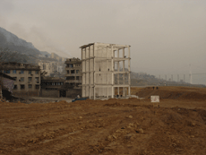

|
ZONE OF INITIAL DILUTION
Antoine Boutet | France 2006 | 30 min.
Format: Beta SP
Material: DV
Original language: French, Mandarin
Script: Antoine Boutet
Camera: Antoine Boutet
Editing: Antoine Boutet
Sound: Antoine Boutet
Production: Antoine Boutet with AFAA
Zone of Initial Dilution has to do with the urban transformation of the Three Gorges region in China, and the upheavals caused there by the construction of the world's largest hydraulic dam. This "zone of initial dilution", a term borrowed from engineering to define the perimeter of a water-course polluted by waste that is subsequently gradually diluted in the general current, illustrates the situation that is being introduced into this region with the progressive obliteration of a way of life, along with local activities.
Prior to the dam's completion, scheduled for 2008, the video draws up a report on the river's banks and the cities and towns situated on the Yangtze, ranging from those either in ruins or vanished to others enjoying an economic boom; it also tries to pinpoint the consequences on the landscape
and local populations when the waters have finally reached their highest level.
Antoine Boutet, born in 1968, graduated by the Ecole des Beaux-Arts (Pau) and the Ecole Supérieure des Arts Décoratifs (Paris). Director of experimental videos, video installations and documentaries. Lives and works in Paris.
Films: Utopia 2005 | Conversation-Conversation 2005 | Zone of Initial Dilution 2006
back
|